The Best Workouts You Can Do At Home
Exercise is an important part of a healthy lifestyle—it provides multiple health benefits and is shown to have anti-aging effects. However, for many people finding the time to workout is a struggle. Busy work and home schedules continue to be the primary reason workouts are missed. Can you relate?
Luckily, exercise doesn't need to be all-or-nothing or a huge time commitment. Shorter, high-intensity workouts can provide a middle ground with a quick jolt of cardio and strength training that can really add up.
7 Days of 7-Minute Workouts
7-minute workouts are a great way to exercise when your time is limited. The following workouts are fun, effective, and can be modified to your fitness level.
How to Use 7-Minute Workouts Effectively
As more and more time-strapped exercisers are turning to truncated exercise programs, the burning question is, do they work? While many of the social media claims, such as losing multiple inches and pounds per week with 7-minute workouts, are far-fetched, many people are finding significant success. The key is to keep expectations in line with reality.
While 7-minutes of exercise per day isn't going to turn you into an elite athlete, these workouts can help tone, build cardiovascular fitness, improve strength, and keep exercise momentum going between longer workouts. If those are your goals, then 7-minute workouts can produce effective results. Research has indicated that performing a high-intensity interval training (HIIT) session lasting 7.5 minutes one time per week improved aerobic fitness.
Other studies have shown that high-intensity workouts can be as effective as longer, slower workouts in improving both aerobic and anaerobic capacity.However, researchers also noted that some participants did not prefer (or especially enjoy) day-after-day HIIT sessions, which require quick, explosive bursts of full-on, exhausting effort. This finding indicates it may be more effective for some people to alternative HIIT with other types of workouts, particularly for the long-haul. Either way, if you're looking for a quick, exercise boost on a busy day, a 7-minute workout is a great option.
- Before Your Workout
- Workout 1: Quick and Easy Circuit Training
- Workout 2: 5-Move Full-Body Blast
- Workout 3: 7-Minute Plyometric Core Challenge
- Workout 4: 7 Minutes to Stronger Legs
- Workout 5: Stability Ball Blast
- Workout 6: 6 Moves in 7 Minutes
- Workout 7: 7-Minute HIIT
- A Word From Fachfoucha
Before Your Workout
- Warm-up before exercising:
Walk or jog in place and perform some light stretches for at least one minute before engaging in any workout routine.
- Pay attention to your form and function:
Keep core engaged throughout the movements. Modify or discontinue any exercise that feels too difficult or causes discomfort.
- Use resistance based on your fitness level:
For workouts that require dumbbells, beginners may want to start with 2 to 3 pounds and intermediate/advanced exercisers can start with 5 or 8 pounds or select a challenge resistance they're comfortable using.
- Pace yourself through the program:
Reduce the time interval as needed. Modify plyometric exercises by eliminating the jump portion of the movement.
- Gradually increase duration :
. As you practice these exercises and build your form, you can gradually increase the duration of the 30-second sets to 45-second sets for an extra challenge (in which case each workout would be over seven minutes).
- As you progress, consider adding multiple sets:
For an added challenge, as time allows, work toward completing two or more 7-minute workouts in one session or spaced throughout the day.
Workout 1: Quick and Easy Circuit Training
You can complete this basic full-body circuit training in seven minutes. Perform each exercise in the circuit two times through (not including the 1-minute warm-up) to reach a total of seven minutes!
What You Need: Pair of dumbbells and your body weight
Warm-Up: Walk or jog in place for 1 minute to begin
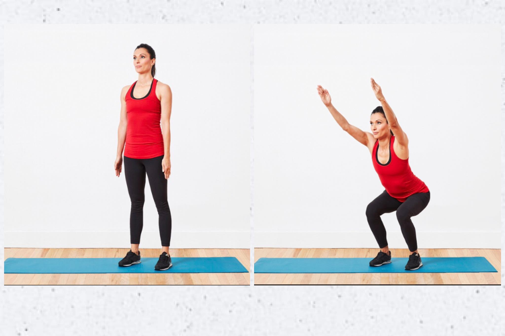
Basic Squat (30 seconds)
Stand with feet hip-distance apart and dumbbells at either side. Look straight ahead, tighten your core, chest lifted, and sit your butt back with body weight over heels like sitting in a chair. Your knees should not travel over the toes during the movement.
Return to a standing position and continue the squat for 30 seconds.
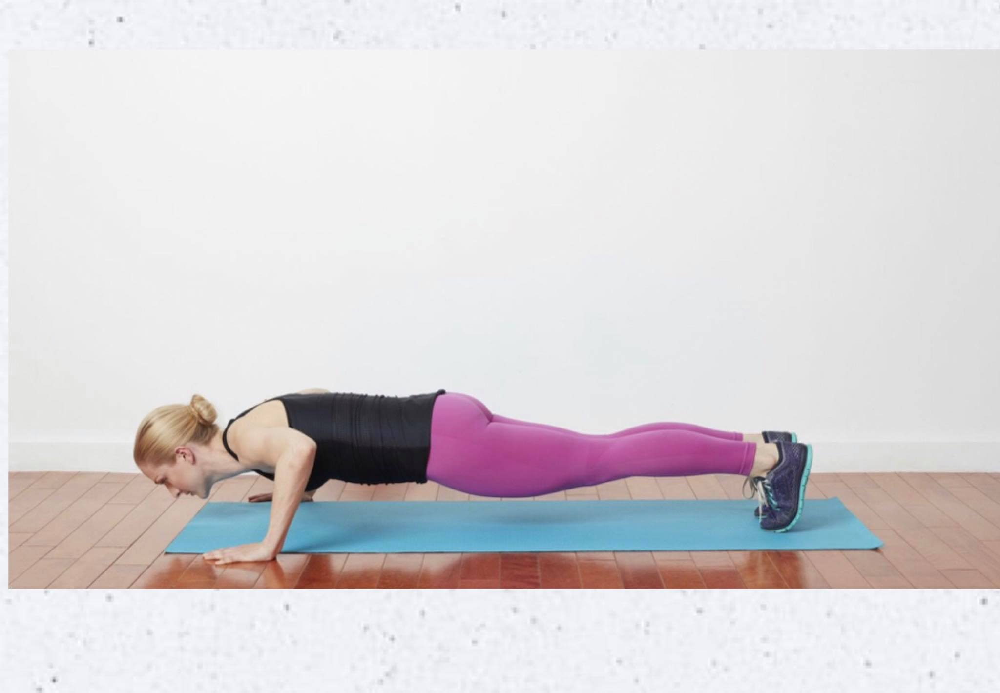
Push-ups (30 seconds)
This is a bodyweight exercise. Start in a full straight arm plank position with hands directly under your shoulders. Keep your back straight and neck neutral. Engage your core and lower body and lower down until elbows are at 90-degree angles. Exhale and push your body to start position maintaining a neutral spine from head to toe through the movement.
Continue the exercise for 30 seconds.
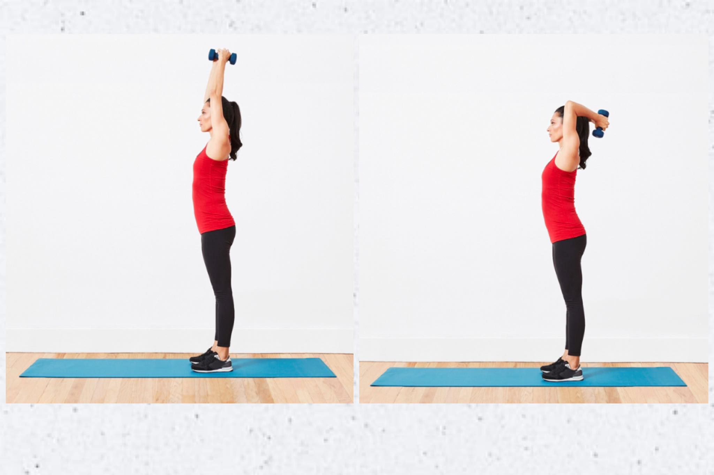
Deadlift With Dumbbells (30 seconds)
Stand with feet hip-width apart, hold dumbbells in front of hips, palms facing thighs. Tighten your core and keep back straight as you bend forward at the hips (don’t arch your back). Imagine pushing your butt back to cause the dumbbells to lower in front of your legs. Knees will bend slightly during the movement. Pause briefly when dumbbells reach your knees or torso is parallel to the floor.
Tighten your core and glutes, exhale as you bring your body back to an upright position. Maintain a neutral spine during the entire exercise and keep dumbbells close to your body.
Continue the exercise for 30 seconds.
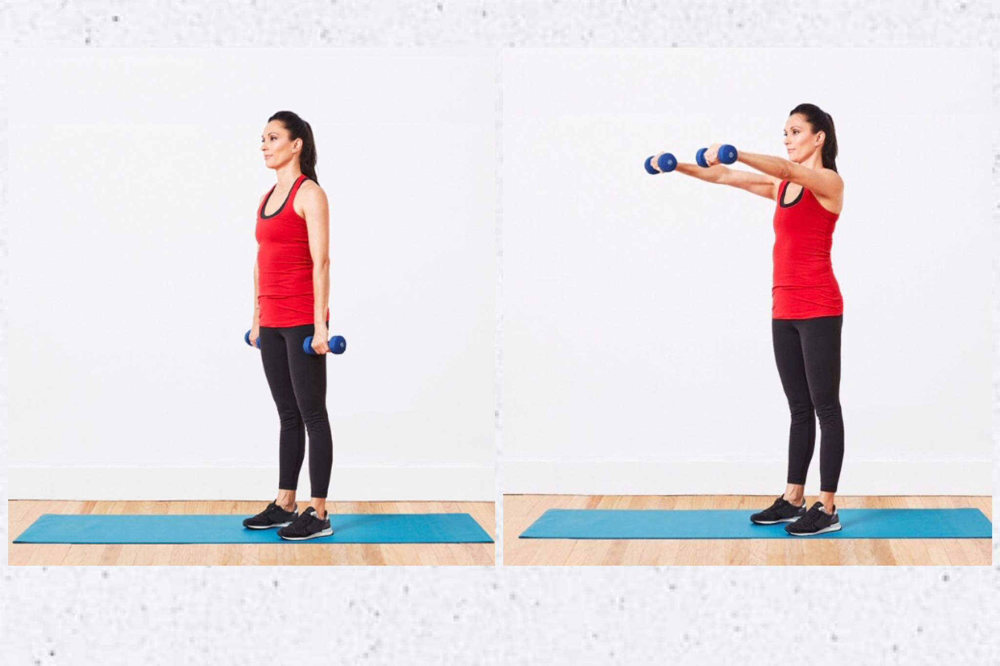
Shoulder Front Raises (30 seconds)
Stand with feet hip-width apart resting dumbbells in front of thighs. Tighten your core, keep your shoulders back and down, and lift dumbbells slowly in front of you to shoulder height. Lower the weights with control back to start position. Avoid swinging the dumbbells during the movement.
Continue the movement for 30 seconds.
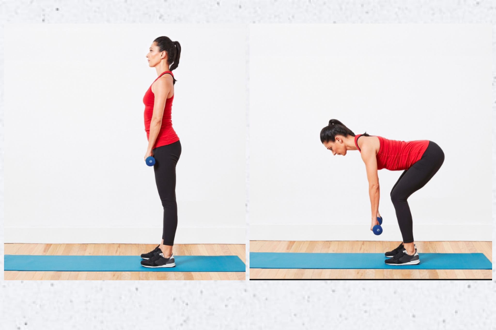
Biceps Curls (30 seconds)
Stand with feet hip-width apart. Hold a dumbbell in each hand, palms facing up. Tighten your core, look straight ahead, keep elbows close to the body, and lift weights toward your shoulders with control. Slowly lower the dumbbells to start position. Avoid swinging the weights during the exercise.
Continue the exercise for 30 seconds.
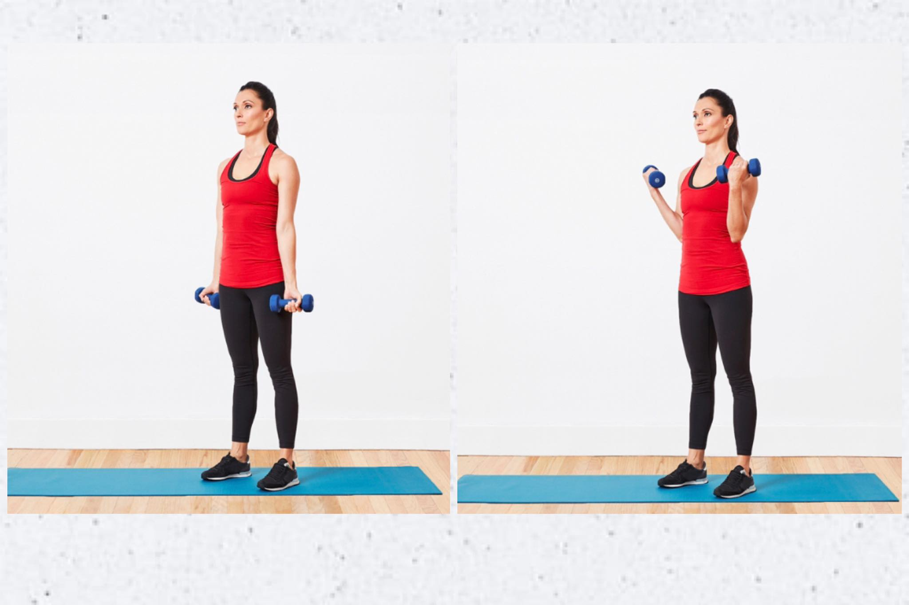
Biceps Curls
Stand with feet hip-width apart. Hold a dumbbell in each hand, palms facing up. Tighten your core, look straight ahead, keep elbows close to the body, and lift weights toward your shoulders with control. Slowly lower the dumbbells to start position. Avoid swinging the weights during the exercise.
Continue the exercise for 30 seconds.
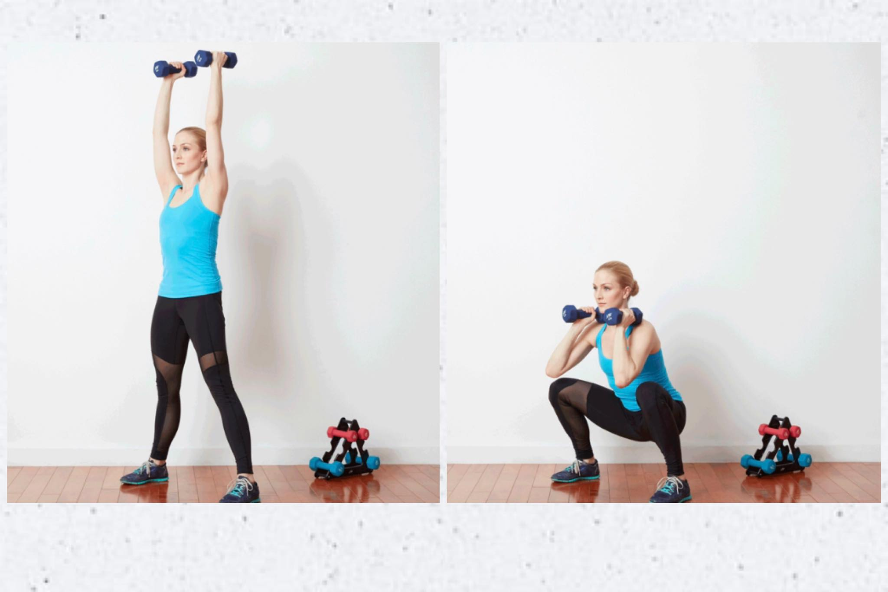
Overhead Triceps Extension (30 seconds)
Stand with feet shoulder-width apart. Hold a single dumbbell in both hands in front of you. Tighten your core and raise the dumbbell overhead until arms are fully extended. Keep arms close to your head and with control, bend at the elbows, lowering the weight behind your head. Avoid flaring elbows out as you lower the weight.
Lift dumbbell to start position over your head and continue the reps for 30 seconds.
Workout 2: 5-Move Full-Body Blast
This exercise program uses five different movements timed at varying intervals for a challenging full-body workout. Perform each exercise in the circuit two times through (not including the 1-minute warm-up) to reach a total of seven minutes.
What You Need: Pair of dumbbells, an exercise mat, and your body weight
Warm-Up: Walk or jog in place for 1 minute to beginners
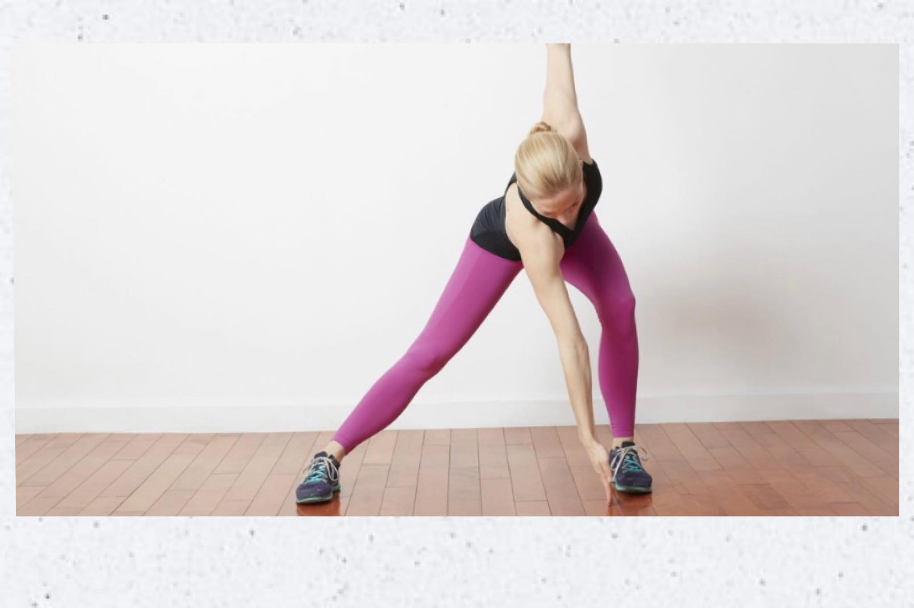
Squat With Overhead Press (30 seconds)
Stand with feet shoulder-width apart holding dumbbells at your sides. Sit your butt back, keep bodyweight over heels, look straight ahead, and avoid rounding back. Return to standing while lifting dumbbells from your sides to an overhead position.
Continue the exercise for 30 seconds. Your body should not be shifted forward with knees over the toes during the exercise.
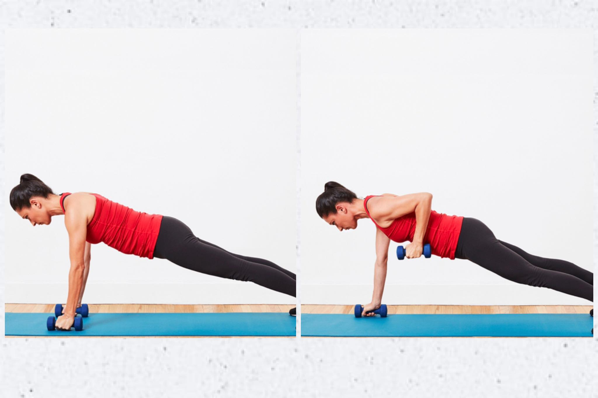
Side Lunge With Windmill (30 seconds)
This is a bodyweight-only exercise. Stand with feet hip-width apart, step to the side with your right leg into a narrow lunge. Maintain a straight back, engage and twist your core, and reach your left hand to just in front of your right toe. Keep your arm straight during the move. Return to start position and repeat on the left side.
Alternate right and left for 30 seconds.
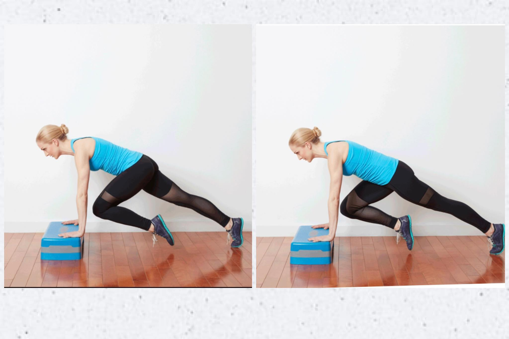
Renegade Row (30 seconds)
Place your dumbbells on the floor shoulder-width apart. Hold dumbbells and maintain your body in a full plank position. Your feet will be shoulder-width apart. Engage your core, keep back straight, and lift one dumbbell to the side of your body, balancing on your other hand and feet.
Return the dumbbell to the floor and repeat on the other side. Continue the rows for 30 seconds.
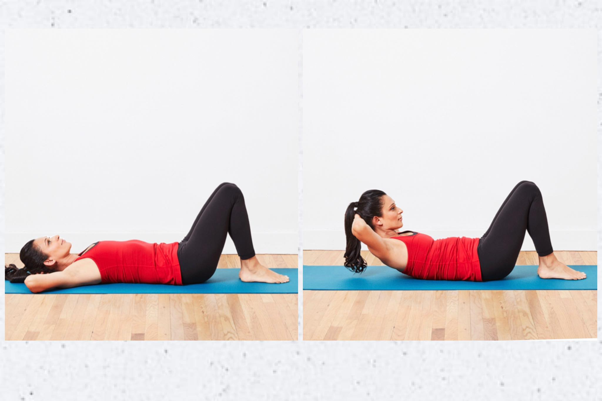
Mountain Climbers (30 seconds)
This is usually performed as a bodyweight-only exercise. Start in a plank position on the floor, back and body straight, keeping the core tight. Pull your right leg towards the chest and quickly switch, pulling the left leg toward your chest like a plank running motion.
If you have a bench, you can use it to perform the move. Simply place hands on the bench rather than on the floor.
Continue switching back and forth for 30 seconds.
Abdominal Crunch (1 minute)
Using an exercise mat on the floor, lie on your back, knees bent, and envision your navel sucked toward your spine. Place your hands gently cradled at sides of the head or crossed over your chest. Avoid pulling on your neck or taking your chin toward the chest. Eyes focused on the ceiling, tighten core, and lift your shoulder blades off the floor a few inches, exhaling as you lift.
Return to start position and continue for one minute or 60 seconds.
Workout 3: 7-Minute Plyometric Core Challenge
This is a full cardio and core blast you can complete in seven minutes. This program uses high-intensity interval training (HIIT) combined with controlled core movements.
What You Need: Bodyweight, jump rope, 3- to 5-pound dumbbell, and an exercise mat
Warm-Up: Walk or jog in place for 1 minute to begin
Burpee (30 seconds)
Start in standing position, feet shoulder-width apart. Tighten your core, move into a deep squat position with hands on the ground, jump feet backward holding a plank position, and jump feet forward returning to squat position—make an explosive jump upward extending through ankles, knees, and hips, landing back in a squat position.
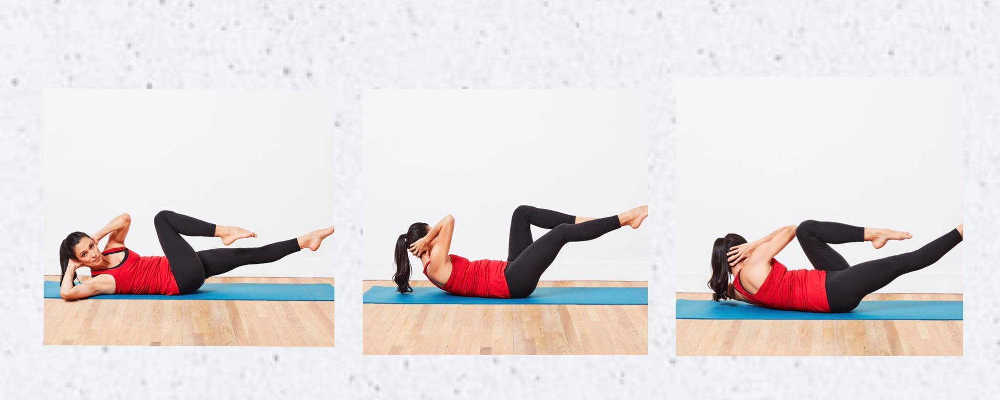
Bicycle Abs (30 seconds))
Using an exercise mat, lie on your back on the floor. Keep your low back pressed into the floor, legs extended with slightly bent knees, and head and shoulders raised a few inches off the floor. Place hands lightly on sides of your head. Avoid pulling on your head and neck.
Tighten the core, bring one knee towards the chest, and reach the opposite elbow toward this knee—your body should be twisting through the core in one motion. (You don’t have to touch the knee to the elbow.) Lower the leg and arm at the same time and repeat this motion on the other side.

Jump Rope (30 seconds)
Stand with feet close together but not touching with a slight bend in the knees, maintaining good posture, head looking forward, chest lifted, and rope handles held comfortable in your hands. Engage your core and jump up while turning the rope using the wrists. The rope will travel over your head and under your feet for one jump rotation.
Land softly on the midsoles of your feet and jump for 30 seconds to start.
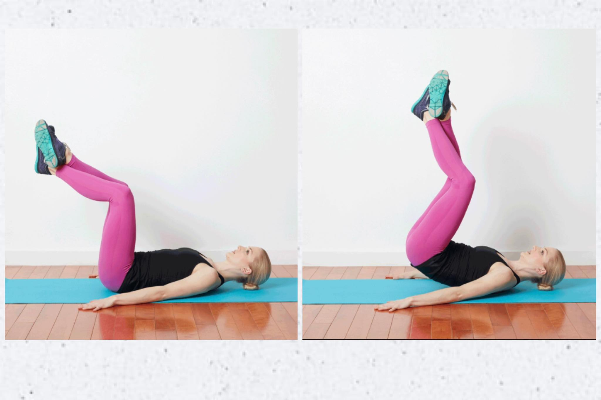
Reverse Crunch (30 seconds)
Using an exercise mat, lie on your back on the floor. Press your back into the floor, legs extended to ceiling with slightly bent knees, feet crossed at the ankles, and hands at your sides. Tighten your core to lift hips up and slightly toward your chest. Lower hips back to the start position, not allowing your back to arch.
Focus on quality movement during the interval and pace yourself.
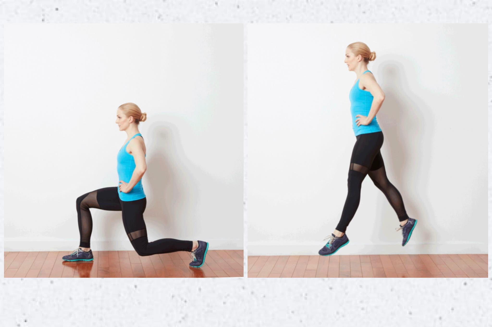
Plyometric Lunges (30 seconds)
Stand with one leg forward and one leg back. Engage your core, sit into a lunge position and with one explosive movement jump up, switch legs, and maintain a balanced foot position—the forward knee should not travel beyond the toe.
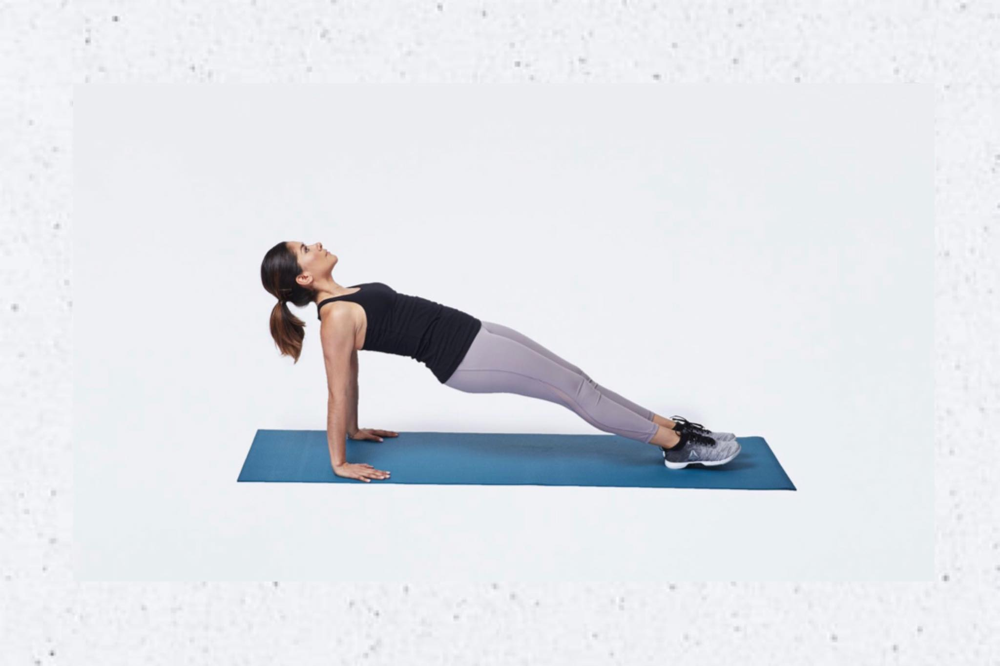
Reverse Plank (30 seconds)
For a reverse plank, sit on an exercise mat on the floor, legs extended in front of you. Place your palms (fingers spread wide) on the floor slightly behind and outside your hips. Press into your palms and lift your hips and torso toward the ceiling. Look up to the ceiling, point your toes, and keep your arms and legs straight.
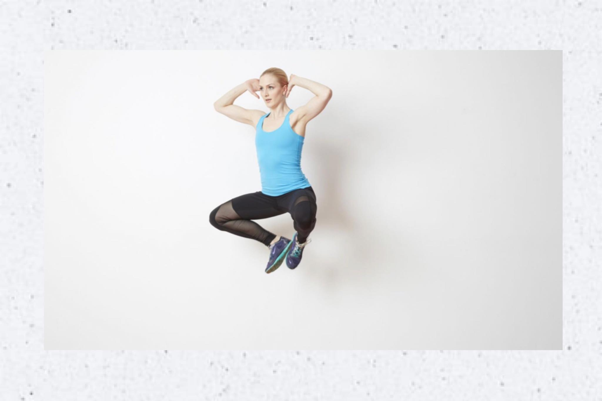
Froggy Jumps (30 seconds)
This is the hands-behind-your-head version. Stand with feet slightly more than shoulder-width apart. Sit your butt back into a wide low squat, weight over heels. With an explosive jump up, swinging arms upward, bring fingertips to either side of head, toes touch together and out, landing softly back into a squat.
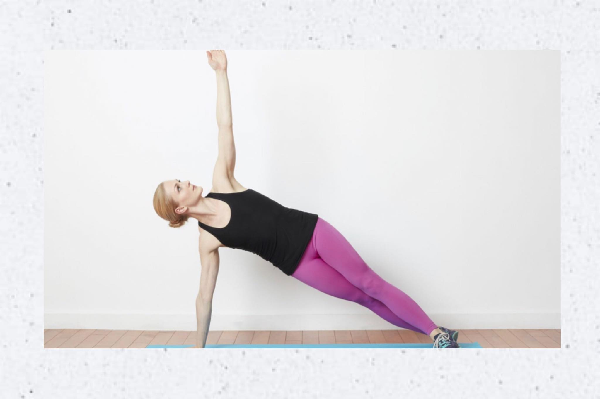
Side Plank (30-second split, 1 minute total)
Lie on your right side on an exercise mat with legs extended (right leg will be placed directly on the left leg, feet stacked). Place right elbow directly under shoulder, keep head and spine neutral, while right hip and knee remain in contact with the floor.
Engage core and lift your hips and knees off the floor. Hold for 30 seconds and repeat on the other side for 30 seconds.
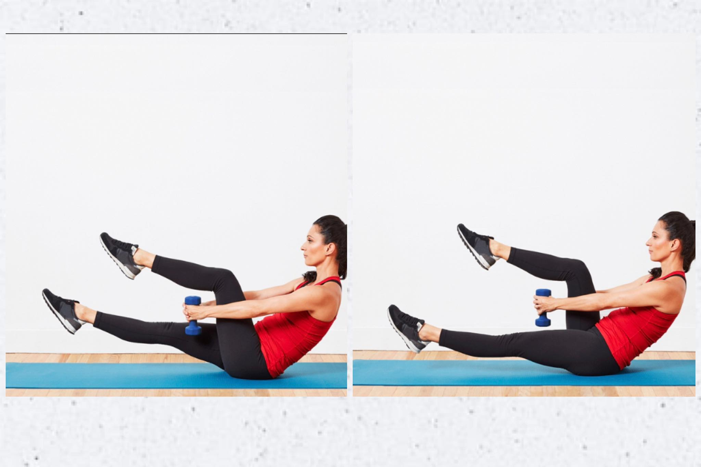
Leg Loops With Dumbbell (30 seconds)
Sit on an exercise mat on the floor with legs fully extended in front of you. Slightly bend your knees, heels resting on the floor, tighten your core and lean your torso back. Lift your legs a few inches off the floor. Start by holding a dumbbell in your right hand, bringing your right knee up toward your chest and looping dumbbell under the right knee and into your left hand.
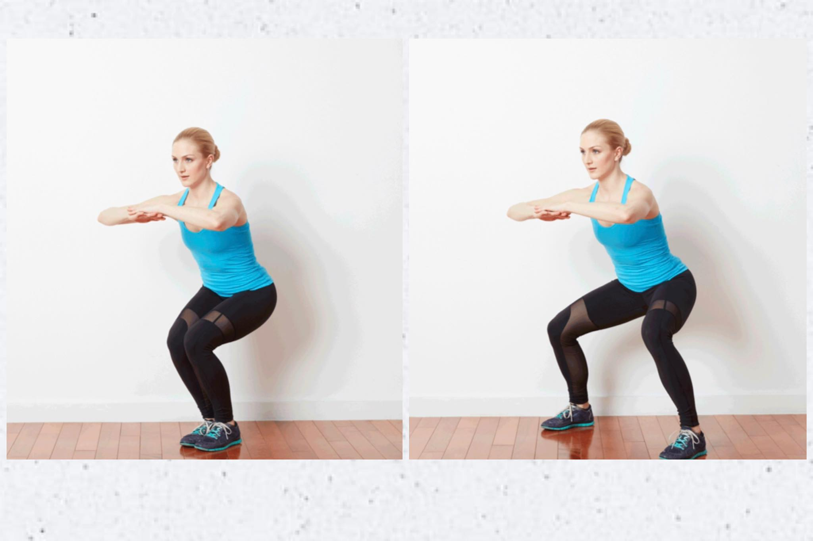
Plyo Jacks (30 seconds)
Stand with feet hip-distance apart, push your butt back slightly, bend at the knees and prepare the body to explode off the ground, extending legs to the sides and arms up overhead. Return to the start position in one motion.
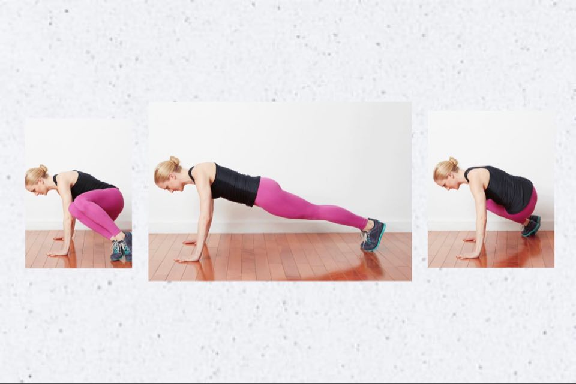
Overhead Triceps Extension (30 seconds)
Start in a full straight arm plank position on the floor. Maintain a tight core, straight back, and position your hands directly under your shoulders. Your head and neck are neutral. Tighten your core and hop both feet over to the right side. Knees will be bent and landing just outside the right elbow. Jump back to the plank position and repeat the movement on the left side.
Workout 4: 7 Minutes to Stronger Legs
Strengthen and define your legs with this 7-minute power workout. Perform each exercise in the circuit two times through (not including the 1-minute warm-up) to reach a total of seven minutes!
What You Need: Pair of dumbbells and your body weight
Warm-Up: Walk or jog in place for 1 minute to begin
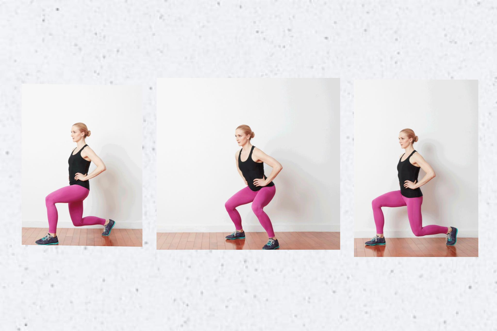
Around the World Lunge (30 seconds)
Stand with feet hip-width apart. Engage your core, and perform a lunge forward with the right leg, push back to start position, lunge to the side (lateral) and sit butt back—keep the body upright, look forward, push back to start position, bring foot backward into a reverse lunge, and push back to start position.
Continue the lunge series on the left leg to complete one full repetition. Alternate the right and left sides for 30 seconds total.
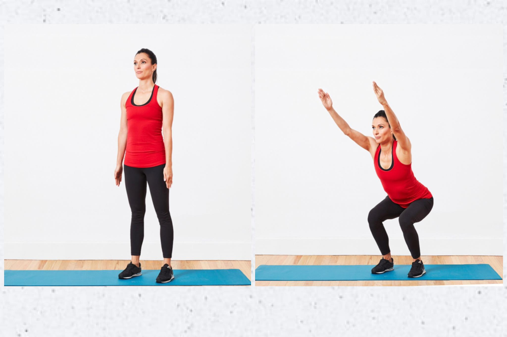
Squat (30 seconds)
Stand with feet hip-distance apart and hold dumbbells at your sides. Look straight ahead, tighten your core, lift your chest, and sit your butt back with body weight over heels like sitting in a chair. Your knees should not travel over the toes during the movement.
Return to a standing position and continue the exercise for 30 seconds.
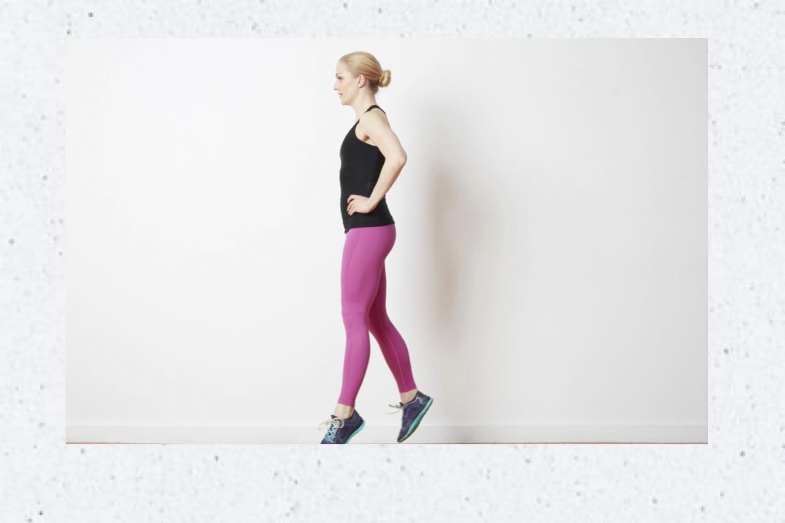
Lunge Jump (30 seconds)
Stand with one leg forward and one leg back. Engage your core, sit into a lunge position, and jump up with one explosive movement—switch legs and maintain a balanced foot position (the forward knee should not travel beyond the toe).
Continue the alternating lunge jumps for 30 seconds.
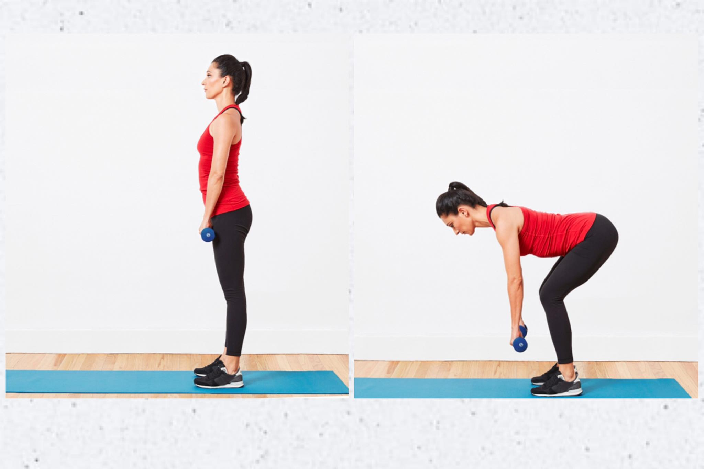
Deadlift (30 seconds)
Stand with feet hip-width apart, hold dumbbells in front of hips, palms facing thighs. Tighten your core and keep back straight as you bend forward at the hips (don’t arch your back). Imagine pushing your butt back to cause the dumbbells to lower down in front of your legs. Knees will bend slightly during the movement. Pause briefly when dumbbells reach your knees or torso is parallel to the floor.
Tighten your core and glutes, and exhale as you bring your body back to an upright position. Maintain a neutral spine during the entire exercise and keep dumbbells close to your body.
Continue the exercise for 30 seconds.
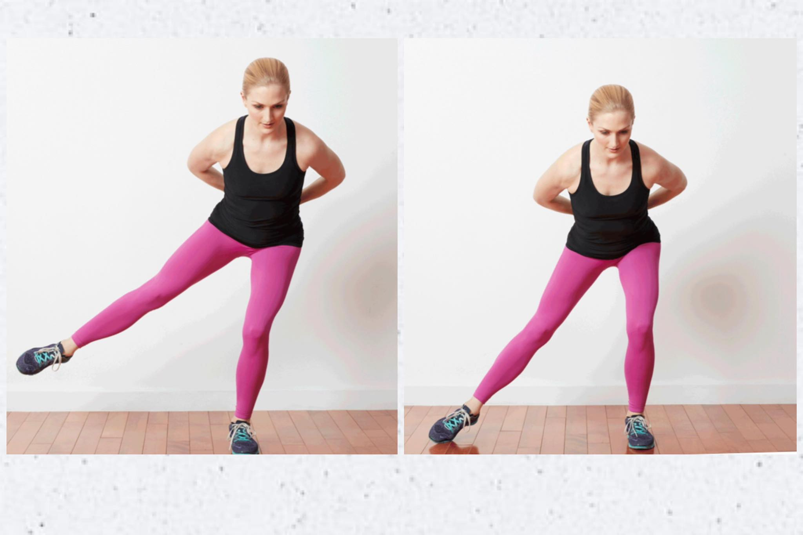
Bent-Over Leg Lift (Two sets of 30 seconds—1 minute total)
Stand with legs shoulder-width apart, bend over slightly, keep core tight and back straight, place hands behind your back, bear your weight on the right leg and extend the left leg to the side, resting on the toe. Sit back in a slight squat, lifting the left leg to the side with a flexed foot in one motion. Lower left leg back to resting position.
Perform lifts for 30 seconds. Repeat on the other side for 30 seconds.
Workout 5: Stability Ball Blast
This is an effective 7-minute stability ball (SB) challenge that works all major muscle groups and more. It’s harder than you think. Perform each exercise in the circuit two times through (not including the 1-minute warm-up) to reach a total of seven minutes!
What You Need: Height appropriate stability ball, an exercise mat, and a pair of dumbbells
Form Tips: Pay attention to your form and function. Keep core engaged throughout the movements. Modify any exercise that feels too difficult or causes discomfort.
Warm-Up: Walk or jog in place for 1 minute to begin
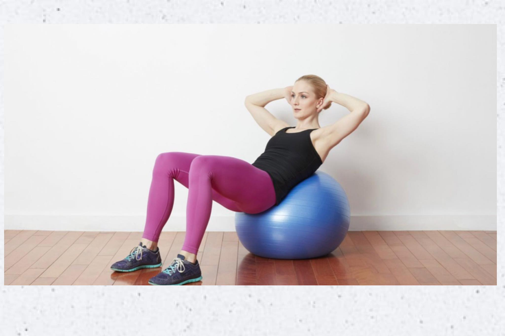
SB Crunches (30 seconds)
Start by sitting on the stability ball. Tighten your core and walk out until your butt/back is supported on the front spherical part of the ball. Head and neck are hanging off but maintained in a neutral start position. Hips and knees are bent. Place fingertips at sides of the head or across your chest. Maintain a tight core and gently hyperextend back allowing your back to feel the contour of the ball. Tighten your core, exhale, and bring your head and shoulder blades off the ball without pulling on the head/neck.
Continue the exercise for 30 seconds.
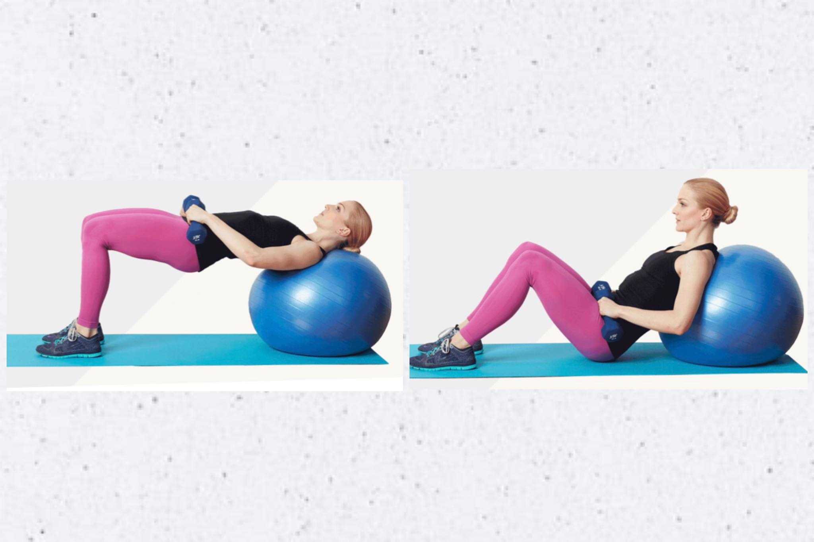
SB Hip Thruster (aka Glute Squeeze) (30 seconds)
Sit on the stability ball holding dumbbells on your thighs. Tighten your core and roll body out until head and shoulders are supported on the ball, dumbbells resting on hips. Knees will be bent and feet flat on the floor. Lower your hips with weights toward the floor without rolling the ball. Squeeze your glutes, maintain a neutral spine, and raise your hips back to start position.
Continue the exercise for 30 seconds.
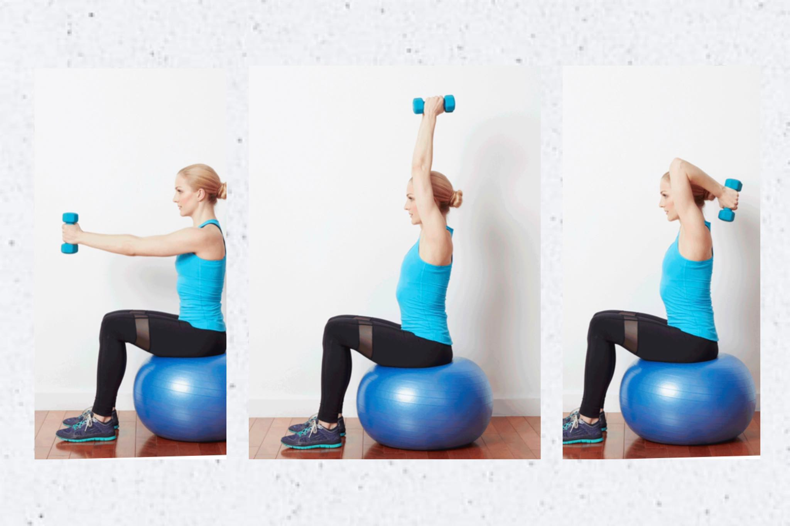
SB Front Raise/Triceps Extension (30 seconds)
Sit on a stability ball holding one dumbbell in both hands. Tighten your core, maintain a neutral spine, and raise the dumbbell with straight arms up, over, and behind your head. Control each movement, pause the front raise before moving to the overhead triceps extension. Keep arms close to your head as you allow the dumbbell to lower behind your head.
Return slowly to start position and continue the exercise for 30 seconds.
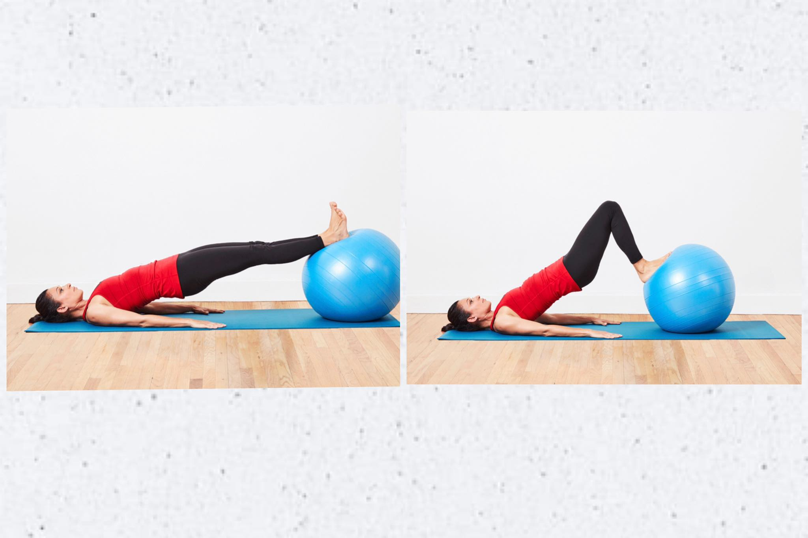
SB Hamstring Curl (30 seconds)
Lie on an exercise mat, back pressed into the floor, and heels supported on a stability ball. Tighten your core and lift your glutes off the floor into a ball bridge position. Slowly bend or flex your knees, squeeze your glutes, and pull the ball toward your butt. Maintain a tight core and extend the legs back out into bridge position.
Continue the exercise for 30 seconds.
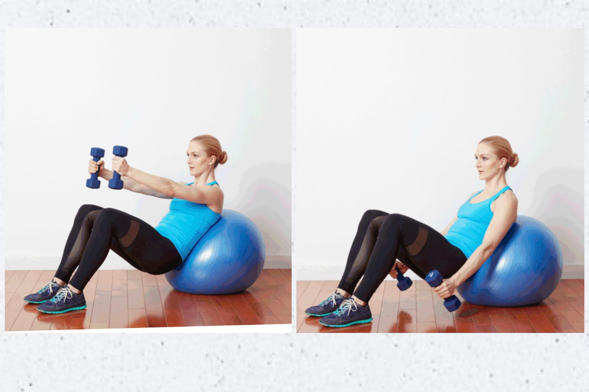
SB Weighted Incline Front Raise (30 seconds)
Sit on a stability ball with dumbbells on your thighs. You can either sit on top of the ball (to protect the low back) or angle your body on the side of the ball for a greater challenge. Tighten your core and slowly walk feet forward until your body comes down to an inclined position. Maintain neutral alignment, head looking forward. Dumbbells will be in a hammer ready position (held palms facing sides). Raise the weights to shoulder height and lower back down with control. The core remains strong throughout the movement.
Continue the exercise for 30 seconds.
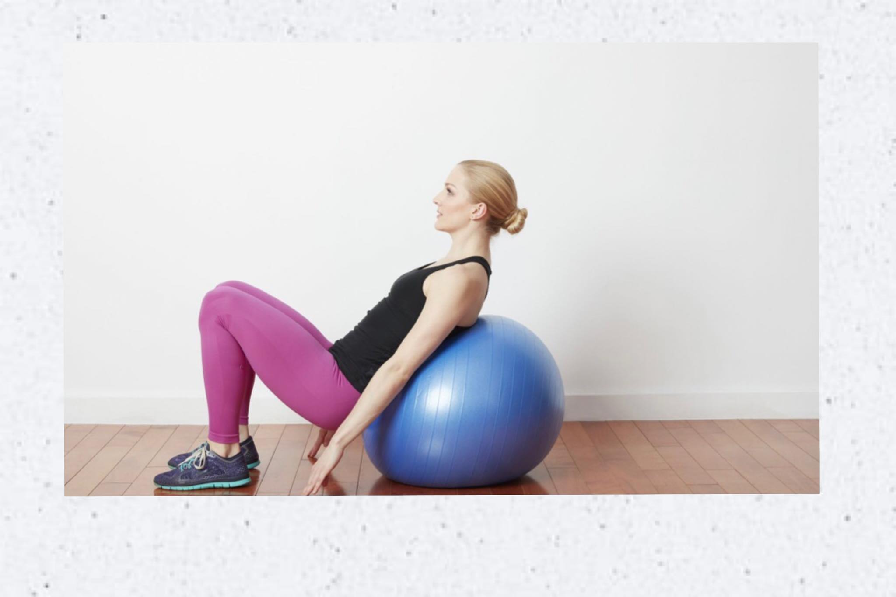
SB Walk Out (30 seconds)
Sit on a stability ball. Tighten your core and slowly walk feet forward until your body comes down to an inclined position. Maintain a neutral spine, bent knees, with fingertips barely touching the ground. Push through your heels, flex thighs, squeeze glutes, and extend body back on the ball until legs are almost straight. Lower your body with control to start position.
Continue the exercise for 30 seconds.
Workout 6: 6 Moves in 7 Minutes
Try this challenging full-body workout that takes each exercise interval to one minute. Pace yourself!
What You Need: Pair of dumbbells and your body weight
Warm-Up: Walk or jog in place for 1 minute to begin
Around the World Lunge (1 minute)
Stand with feet hip-width apart. Engage the core, perform a lunge forward with right leg, push back to start position, lunge to the side (lateral) and sit butt back, keep the body upright, look forward, push back to start position, bring foot backward into a reverse lunge, and push back to start position. Repeat the lunge series on the left leg to complete one full repetition.
Continue the exercise alternating right and left sides for 60 seconds.
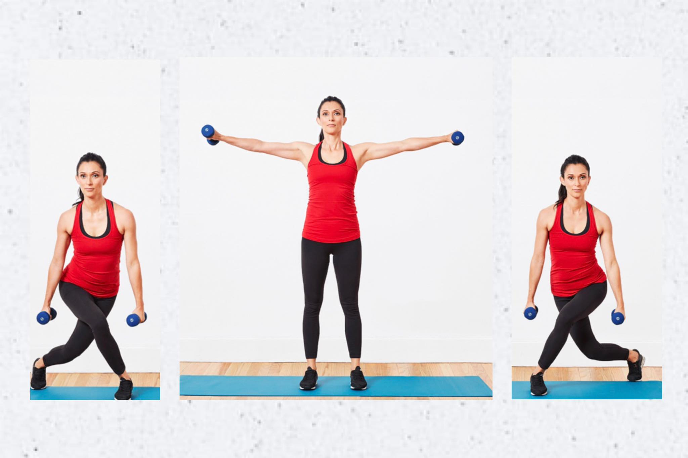
Cross Lunge Lateral Raise (1 minute)
Stand with feet shoulder-width apart with dumbbells at your sides. Look forward, chest lifted, core tight, and cross right foot behind you landing on the ball with both knees bent (curtsy lunge). Bring the right foot back to start position and at the same time, extend arms out to sides with elbows slightly bent. Slowly lower arms back down and repeat the movement by stepping the left foot back.
Continue the exercise alternating right and left sides for 60 seconds.
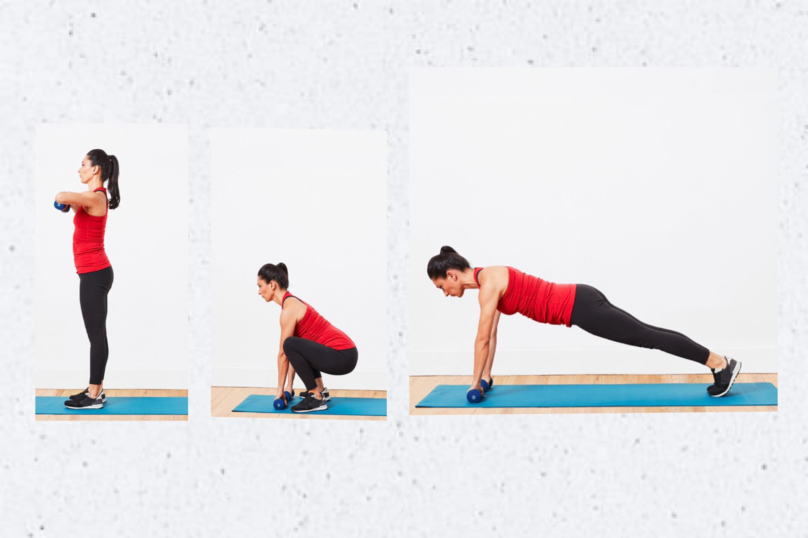
Plank With Upright Row (1 minute)
Start in a full straight arm plank position holding dumbbells on the floor. Imagine a straight line from your head to toe with a tight core. Jump your feet forward into a low squat position with weight over heels. Tighten your glutes (butt muscles) and lift to a standing position while lifting weights to your chest. Elbows will naturally glide out to the sides as dumbbells are lifted to your chest. Lower your arms slowly to start position.
Repeat the exercise for 60 seconds.
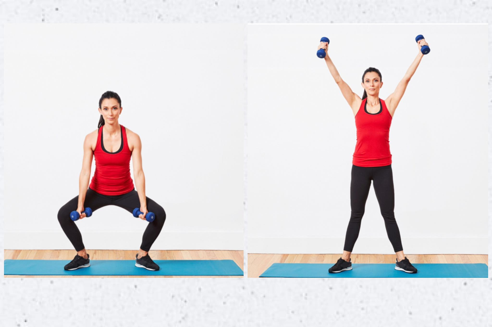
Plié V Raises (1 minute)
Holding dumbbells down in front of you, stand with feet slightly wider than shoulder-width apart, toes are pointed outward. Lower down into a plié, bending at the knees like a ballet dancer. Tighten your glutes (butt muscles) and return to a standing position. Tighten your core and lift arms up overhead and out into a V-shape. Lower your arms to start position.
Repeat the exercise for 60 seconds.
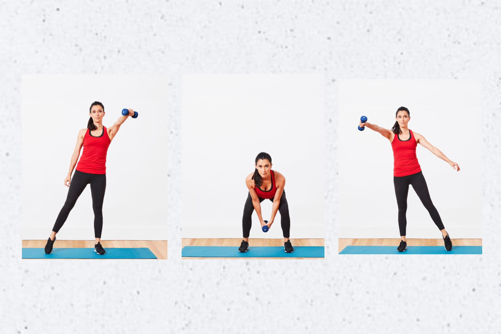
Side Squat With Dumbbell Swing (1 minute)
Stand with feet slightly shoulder-width apart. Hold a dumbbell with both hands in front of you. Tighten your core and sit back into a deep squat allowing the dumbbell to swing down between your legs. Lift your body to standing, shifting body weight to the right side, placing a dumbbell in the right hand and swinging it forward using standing momentum. Return to a deep squat shifting body weight to the left allowing the dumbbell to swing to the left front. You will be on the ball of each foot at the top of the movement.
Alternate right and left for 60 seconds.
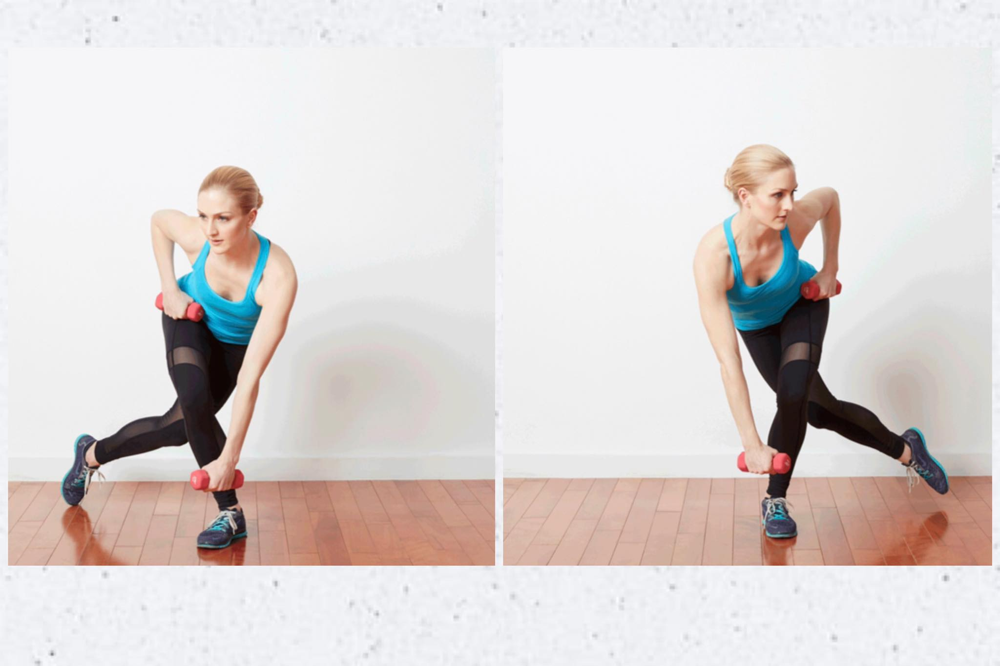
Speed Skaters With Dumbbells (1 minute)
Start in standing position feet shoulder-width apart holding light dumbbells at your sides. Take a big sidestep to the right, sweep your left leg behind you and swing left arm with control across your body holding dumbbell. Alternate this move with a big step left, sweep right leg behind you and swing right arm holding another dumbbell across your body.
Alternate the weighted speed skaters side to side for 60 seconds.
Workout 7: 7-Minute HIIT
This full-body high-intensity workout is guaranteed to challenge your physical limits. This involves minimal breaks and 30-second split blasts per exercise with a 1-minute interval goal. One time through is all you need.
What You Need: Your body weight, an exercise mat, and a towel
Body Tips: Pace yourself through this workout and take breaks as needed. Modify any plyometric exercise by eliminating the jump portion of the movement.
Warm-Up: Walk or jog in place for 1 minute to begin
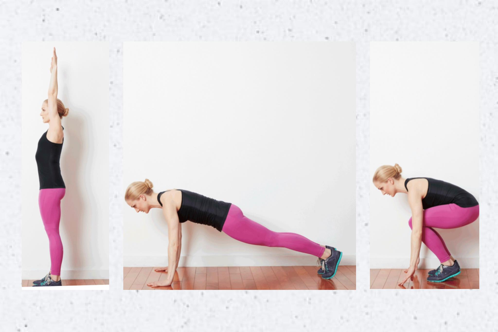
Burpee (Two sets of 30 seconds—1 minute total)
Start in standing position, feet shoulder-width apart. Tighten your core, move into a deep squat position with hands on the ground. Jump feet backward holding a plank position, jump feet forward returning to the squat position, explosive jump upward extending through ankles, knees, and hips, land back in a squat position.
Repeat move for 30 seconds, rest for 15 seconds and continue for another 30 seconds.
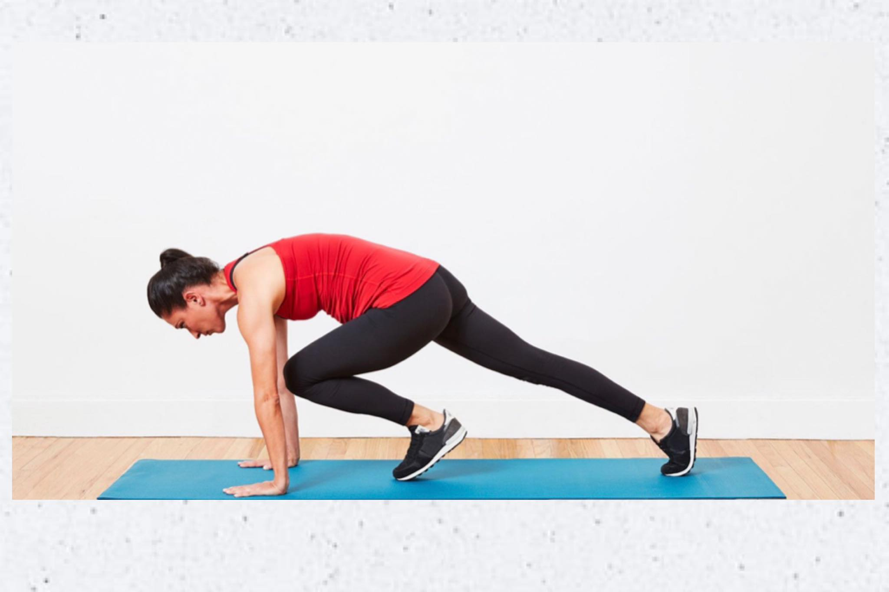
Mountain Climbers: (Two sets of 30 seconds—1 minute total)
Start in plank position, keeping back and body straight and core tight. Pull right leg towards the chest and quickly switch pulling the left leg toward chest like a plank running motion. Continue to switch back and forth for 30 seconds maintaining proper body mechanics. Rest for 15 seconds and finish with another 30-second interval.
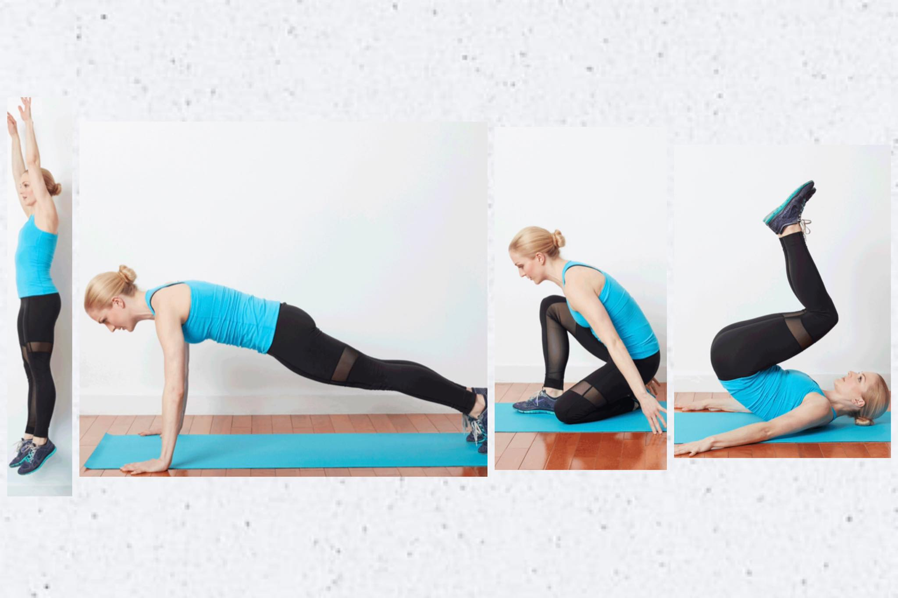
Roll-Up Burpee (Two sets of 30 seconds—1 minute total)
Start in standing position feet shoulder-width apart on an exercise mat. Squat back and place hands on the floor. Tighten core and roll body back, chin tucked, knees toward your chest, hands palms down at your sides. Roll forward with momentum, hands to the floor in a low squat, jump feet back into plank position. Jump feet forward to start squat position and explode upward with a jump.
Perform the exercise for 30 seconds, rest for 15 seconds, and continue for 30 seconds to complete the interval.
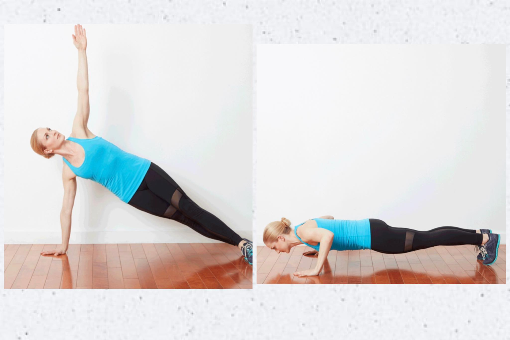
Push-Up to Side Plank (30 seconds on each side—1 minute total)
Start in a push-up position with arms shoulder-width apart from the toes. Perform a push-up keeping your body straight. As you push up, shift your weight to the left side of the body, keeping the core tight and reaching with the right hand toward the ceiling briefly holding a side plank position. Lower the right arm back to start position and repeat exercise alternating to the other side.
Perform the exercise for 30 seconds, rest for 15 seconds, and continue for 30 seconds to complete the interval.
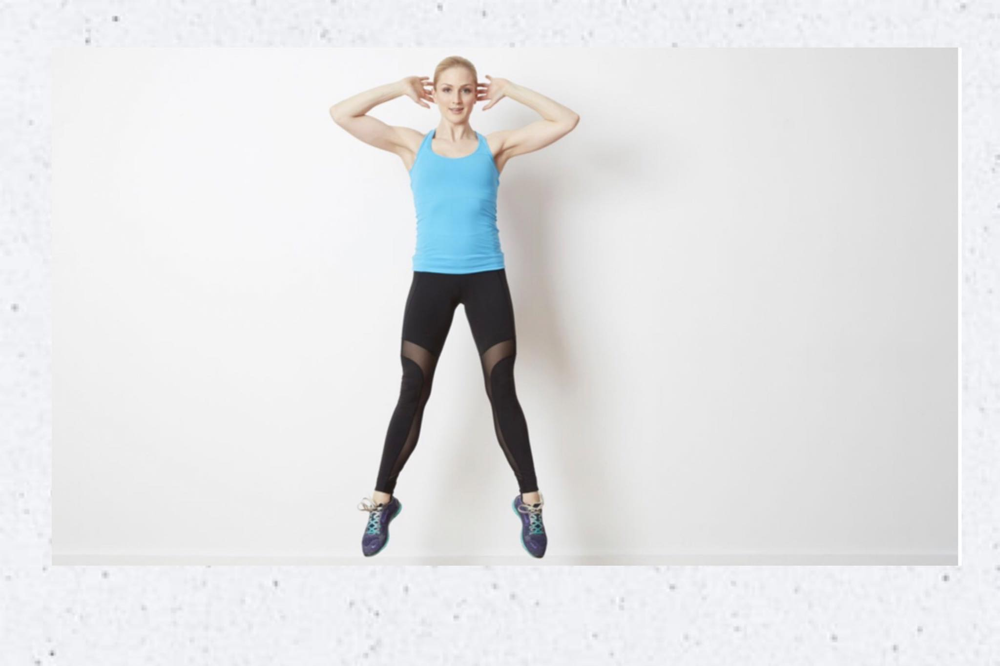
Prisoner Squat Jumps (Two sets of 30 seconds—1 minute total)
Stand with feet shoulder-width apart, cradle hands behind head, look forward and keep your elbows/shoulders back. Squat back, keep core engaged, and explode upward using your lower body fully extending your ankles, feet, and hips in one movement. Land softly returning to starting squat position with weight distributed over heels.
Repeat exercise for 30 seconds, rest for 15 seconds and continue for 30 seconds to complete the interval.
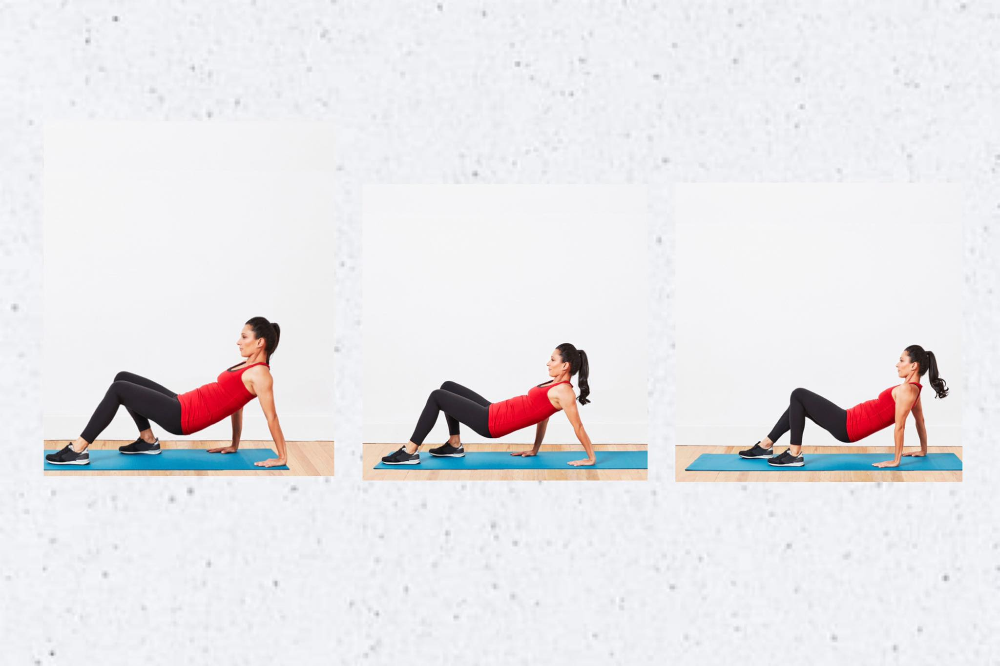
Crab Crawl (Two sets of 30 seconds—1 minute total)
Sit on the floor with knees bent, feet flat on the floor, palms behind you on the floor with fingers tips facing body just behind hips. Tighten your core and lift your butt off the floor. Using your right hand and left foot, take a step forward. Repeat this action on the other side.
Continue the exercise for 30 seconds, rest for 15 seconds, and continue for 30 seconds to complete the interval.